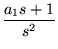
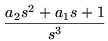
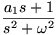
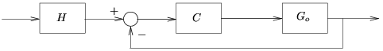
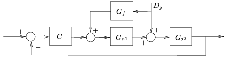
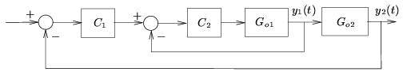

|
You are here : Control
System Design - Index | Book Contents |
Chapter 10
10. Internal Model Principle, Feedforward and Cascade
Structures
Preview
The analysis in previous chapters has focused on feedback loop
properties and feedback controller synthesis. In this chapter we will
extend the scope of the analysis to focus on two further important
aspects, namely: exact compensation of certain types of deterministic
disturbances and exact tracking of particular reference signals. We will
show that, compared to relying solely on feedback, the use of
feedforward and or cascade structures offers advantages in many cases.
We also generalize the idea of integral action to more general classes
of disturbance compensators.
Summary
- This chapter focuses the discussion of the previous chapter on a
number of special topics with high application value:
- internal disturbance models: compensation for classes of
references and disturbances.
- feedforward
- cascade control
- two-degree of freedom architectures
- Signal models
- Certain classes of reference or disturbance signals can be
modeled explicitly by their Laplace transform:
| Signal Type |
Transform |
| Step |
|
| Ramp |
 |
| Parabola |
 |
| Sinusoid |
 |
- Such references (disturbances) can be asymptotically tracked
(rejected) if and only if the closed loop contains the
respective transform in the sensitivity S0.
- This is equivalent to having imagined the transforms being
(unstable) poles of the open-loop and stabilizing them with the
controller.
- In summary, the internal model principle augments poles to the
open loop gain function
Go(s)C(s).
However, this implies that the same design trade-offs apply as
if these poles had been in the plant to begin with.
- Thus internal model control is not cost free but must be
considered as part of the design trade-off considerations.
- Reference feedforward
- A simple but very effective technique for improving responses
to setpoint changes is prefiltering the setpoint (Figure 10.9).
- This is the so called the two-degree-of-freedom (two d.o.f.)
architecture since the prefilter H provides an additional
design freedom. If, for example, there is significant
measurement noise, then the loop must not be designed with too
high a bandwidth. In this situation, reference tracking can be
sped up with the prefilter.
- Also, if the reference contains high-frequency components
(such as step changes, for example), which are anyhow beyond the
bandwidth of the loop, then one might as well filter them so not
to excite uncertainties and actuators with them unnecessarily.
- It is important to note, however, that design inadequacies in
the loop (such as poor stability or performance) cannot be
compensated by the prefilter. This is due to the fact that the
prefilter does not affect the loop dynamics excited by
disturbances.
Figure 10.9: Two degree of freedom
architecture for improved tracking
|  |
- Disturbance feedforward The trade-offs regarding sensitivities
to reference, measurement noise, input-and output disturbances
as discussed in the previous chapters refer to the case when
these disturbances are technically or economically not
measurable. Measurable disturbances can be compensated for
explicitly (Figure 10.10), thus relaxing one of the trade-off
constraints and giving the design more flexibility.
Figure 10.10: Disturbance
feedforward structure
|  |
- Cascade Control
- Cascade control is a well-proven technique applicable when two
or more systems feed sequentially into each other (Figure
10.11).
- All previously discussed design trade-offs and insights apply.
- If the inner loop (C2 in Fig. 10.11) were
not utilized, then the outer controller (C1 in
Fig. 10.12) would- implicitly or explicitly- estimate y1
as an internal state of the overall system (
Go1Go2). This
estimate, however, would inherit the model-uncertainty
associated with Go2. Therefore,
utilizing the available measurement of y1
reduces the overall uncertainty and one can achieve the
associated benefits.
Figure 10.12: Cascade control
structure
|  |
|